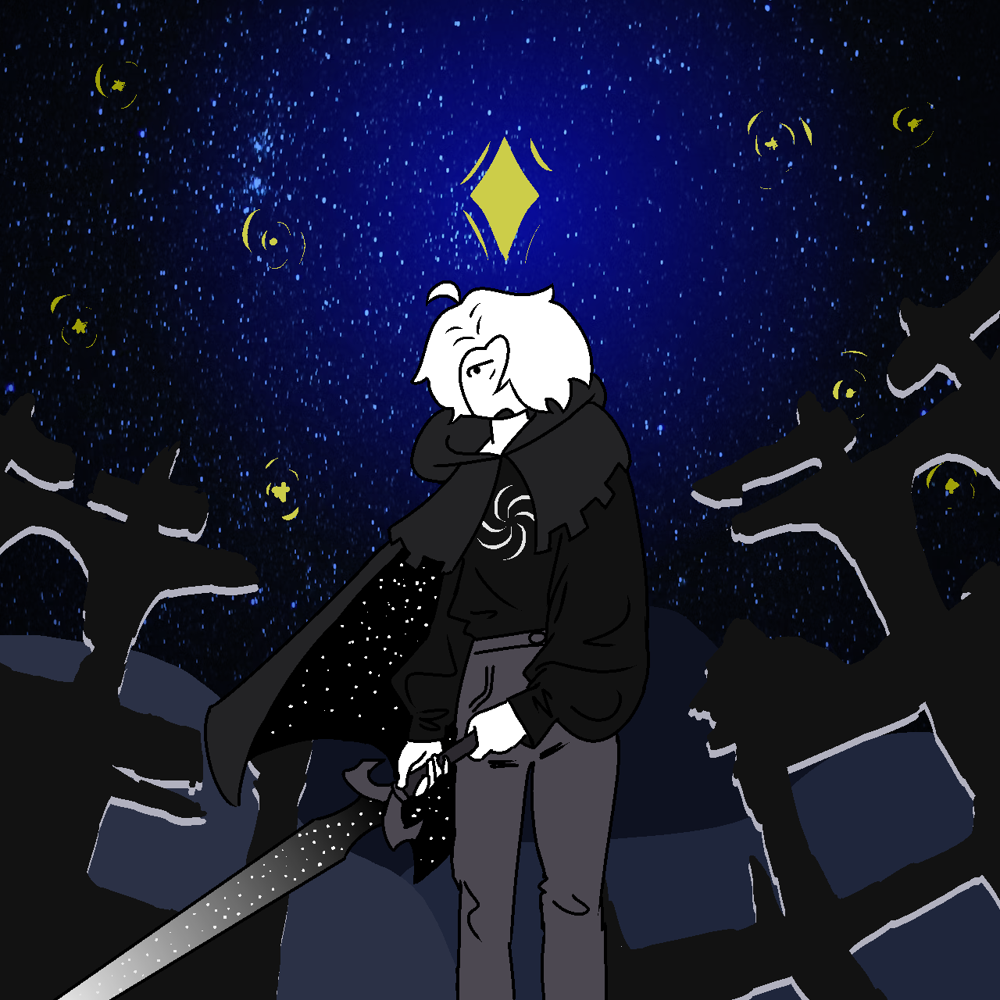

PO: I would have said something sooner but got caught up in Seer Bullshit,,,
PO: But this is rather reckless of you.
MB: That's okay. I still would have done this.
MB: It's not like reckless is not the same thing as pointless. If it can buy you guys some time then this is the least I can do.
MB: Besides, Leon told me about the God stuff- Jack already killed me while I was on my bed. I did that on purpose.
MB: And I've managed to use the powers to evade him and put space between you guys and him. Somewhat literally.
MB: My Moon rotates further out than the other ones now. So he's even further.
PO: I think it's safe to say this is going to get you killed.
MB: I Already died- Bed thing remember-
PO: No I mean killed killed,,,
MB: Elaborate.
PO: When you god tier and die a heroic or just death you're dead for good.
MB: Well that's good.
MB: I'll die a heroic death and you guys can finish the game. We have two heroes of Space. Me and Creative. You only need one.
PO: while yes you're right it's kind of pointless. We're all slated 2b doomed.
MB: So you're saying it's a doomed timeline?
PO: to put it simply It's a doomed timeline,,
PO: Jinx.
MB: Turn your typing indicator on.
PO: 2b fair You have yours off.
MB: Yeah, fair.
MB: I suppose you'd know a thing or two about doomed timelines huh Hero of Doom?
PO: I do,,, And that's why I'm saying what you're doing is pointless.
PO: I just know these kinds of things.
MB: Seer Bullshit?
PO: Seer bullshit.
MB: Well maybe it's just the Coward in me talking- but I'd like to prove you wrong.
PO: ?
MB: I think we can undoom ourselves.
PO: That just isn't how this works,,,
MB: I can create enough space between us and Jack and-
MB: dude seriously turn your Typing indicator on so I know you're typing and I can finish my sentences without being interrupted
PO: wouldn't that be mitigated by you turning your typing indicator on?
MB: as I was saying I can create enough space between us
MB: You know what.
MB: There I turned it on. Happy.
PO: Sure.
MB: Now stop interrupting me!
MB: By creating enough space between us and Jack it'll give us time to finish the game, get stronger, and then face him together.
PO: And you?
MB: Like I said- you don't NEED me. Creative is also a Hero of Space.
PO: How are we meant to face him together if you're dead?
MB: You make a good point.
MB: Find a way to get me to you guys when it's time- and I'll stall Jack.
MB: The way I see it there's only a few possible outcomes
MB: 1) I die and you guys finish the game
MB: 2) You guys save me and we all finish the game
MB: 3) This really is a doomed timeline- and in that case what does it matter?
PO: we can't even Scratch,,,
MB: Then we'll Win.
PO: I'm telling you- this is a doomed Timeline.
MB: And I'm telling you not to throw in the towel so early. If you can't save me then all hope isn't lost. So don't work too hard on that. Your main priority should be finishing the game. I'll be the wall that keeps Jack from interfering.
PO: You make it really hard to tell you anything.
MB: Like I said- it's probably the Coward in me. I can't accept defeat so much that I run from defeat.
PO: I don't think that's cowardly. You're just a sore loser,,,
MB: regardless- don't give up, Hero of Doom.
PO: Then I guess you shouldn't stop running, Hero of Space.
PO: 2b continued,,,